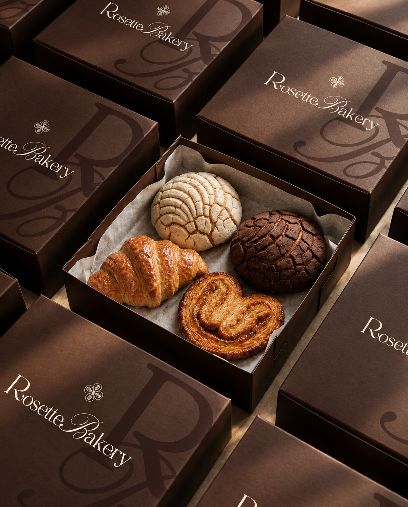

Una identidad completa
Diseñar logotipo, monograma y sistema visual que funcionen juntos, no piezas sueltas.
Proyecto conceptual · Pastelería Artesanal
Exploración de marca para una pastelería que no existe: logotipo, monograma, sistema visual, packaging, menús y piezas de comunicación, con visualización generada con IA.

01El proyecto
Rosette Bakery es un proyecto conceptual: una exploración de marca para una empresa que no existe. Imaginé una pastelería artesanal de pasteles enteros, rebanadas y pan dulce, y le construí una identidad completa desde cero, como si fuera a abrir mañana.
Al no haber cliente, el reto fue ponerme las exigencias yo misma: una marca que se sintiera de alta repostería, elegante y memorable, sin perder la calidez de lo hecho a mano.
Nota de transparencia: el logotipo, el monograma y el sistema visual son diseño mío. Las fotografías y los mockups son imágenes generadas con inteligencia artificial para visualizar la marca; no muestran productos reales.
02Objetivos
Diseñar logotipo, monograma y sistema visual que funcionen juntos, no piezas sueltas.
Equilibrar elegancia y oficio artesanal, con un tono premium que no resulte frío.
Llevar la marca a packaging, vasos, tazas, menús y comunicación sin perder reconocimiento.
Usarla para visualizar la marca en contexto, manteniendo el diseño y las decisiones en mis manos.
03El concepto
La marca nace del cruce entre precisión y oficio. La precisión de la repostería de alto nivel se expresa con una tipografía Didone clásica; el gesto de las manos, con una B caligráfica cuyo trazo se entrelaza con la R, como el movimiento de una manga pastelera.
Sobre el nombre vive un símbolo que condensa la idea: un cuatrifolio construido con batidores.
04El logotipo
El logotipo se compone de tres elementos que se leen en este orden: el símbolo, la inicial caligráfica y el nombre.
Cuatro batidores se abren como pétalos y forman un cuatrifolio. La forma es una abstracción de la flor de la vainilla, ingrediente emblemático de la repostería: la herramienta y el ingrediente en una sola figura.
Cada pétalo conserva sus alambres, y un centro común los une, como una roseta de crema hecha con las herramientas del obrador. De ahí el nombre de la marca.
Su trazo se entrelaza con la R y evoca el gesto de la manga pastelera: el toque humano dentro de una marca precisa.
“Rosette” se compone en una Didone clásica, de alto contraste, que aporta autoridad y elegancia.
Versiones del logotipo 02
El logotipo se organiza en versión principal (símbolo, B y nombre), versión horizontal y monograma RB, que funciona solo en piezas pequeñas como sellos, vasos o redes.
05Sistema visual
#332021#531B26#C49A6C#FAF5EEChocolate y vino sostienen el tono premium; el oro aporta el detalle de lujo discreto y la crema deja respirar las piezas.
06Aplicaciones
Llevé el sistema a ocho piezas para comprobar que aguanta en soportes muy distintos: cinco de packaging y tres editoriales.
Packaging 05
Editorial 03
07Proceso y uso de IA
Concepto, logotipo, monograma, paleta, tipografía y sistema gráfico: diseñados en Illustrator, con todas las decisiones tomadas por mí.
Fotografías y mockups de packaging, vasos, tazas y menús generados con IA a partir de mi diseño, para ver la marca en contexto.
Ajuste final en Photoshop y revisión de que logotipo, color y tipografía se respetaran en cada pieza.
Las imágenes no son productos reales: sirven para presentar la marca como lo haría un estudio antes de producir nada físico.
08Resultado
Una identidad coherente y reconocible en cualquier soporte: el monograma funciona solo en piezas pequeñas, el logotipo completo firma el packaging y la paleta chocolate–oro sostiene el tono premium de toda la marca.
Como ejercicio, me enseñó a usar la IA como herramienta de visualización sin ceder el control del diseño.